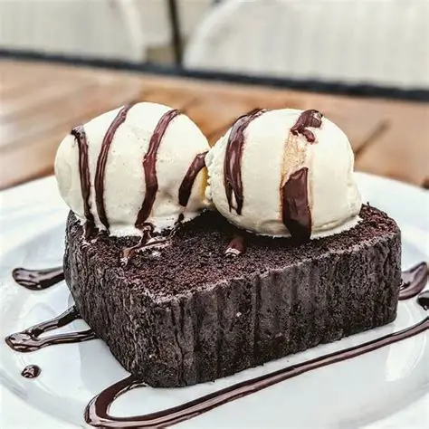
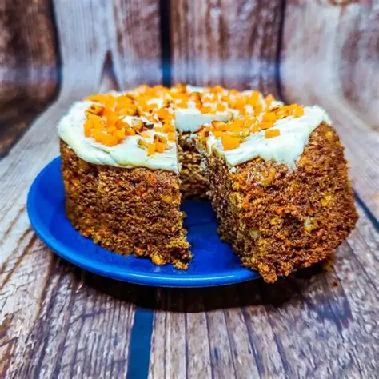
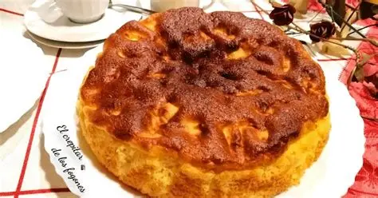

Torta de Chocolate con Helado
La torta de chocolate más fácil del mundo, con helado derretido.
Ver receta
Torta Marmolada de Zanahoria y Chocolate
Zanahoria y chocolate combinados en un marmolado espectacular.
Ver receta
Torta de Naranja y Manzana
La receta matera más fácil de recordar: todo de a dos.
Ver receta